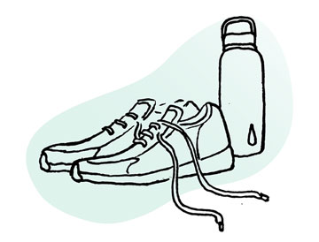

Exercise & Fitness
Exercise isn’t just good for your body, it’s great for mental health. Whatever your age, health limitations, or fitness levels, you can find ways to be more active. Even small steps can add up to more energy, less stress, and better mood.


 Best Exercises for Health and Weight Loss
Best Exercises for Health and Weight Loss
Tips for building a fitness plan, and finding the best exercises for you

 Home Workout and Fitness Tips: Exercising without the Gym
Home Workout and Fitness Tips: Exercising without the Gym
Even when your schedule changes, you can stay physically fit